Timbre prompt
Use this drum sound...
Use this drum sound...
Rhythm prompt
Play this rhythm...
Play this rhythm...
Timbre prompt (text)
Use this drum sound...
Use this drum sound...
Rhythm prompt
Play this rhythm...
Play this rhythm...


| Index | Timbre prompt Use this drum sound... |
Rhythm prompt Play this rhythm... |
TRIA | Timbre prompt (text) Use this drum sound... |
Rhythm prompt Play this rhythm... |
MelodyFlow |
|---|---|---|---|---|---|---|
| 1 | 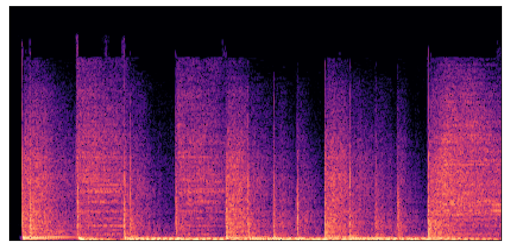 | 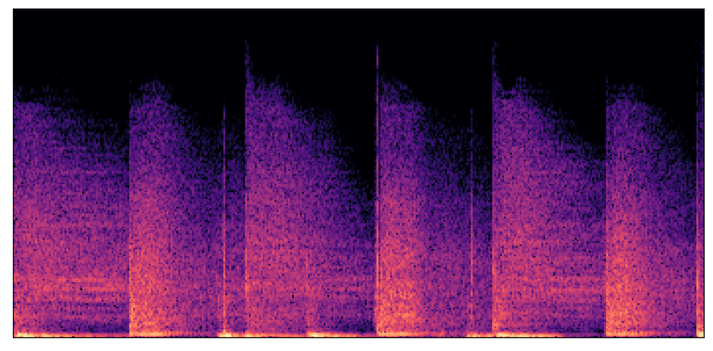 | a loud, acoustic, rock drumkit | |||
| 2 | 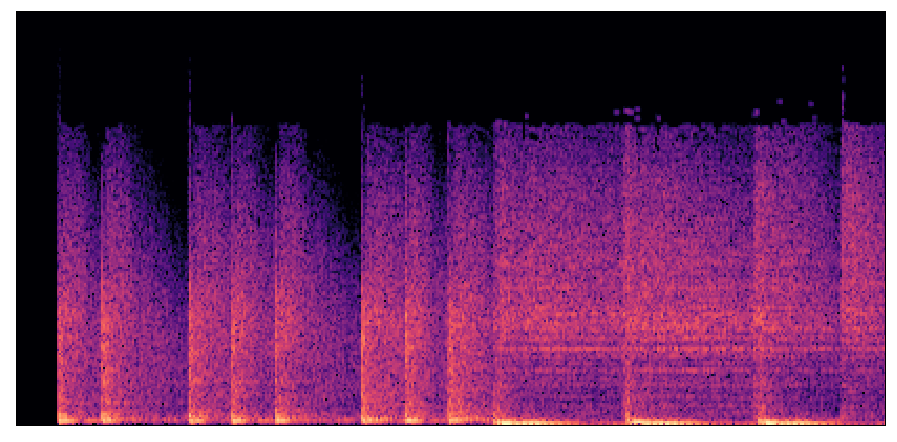 | 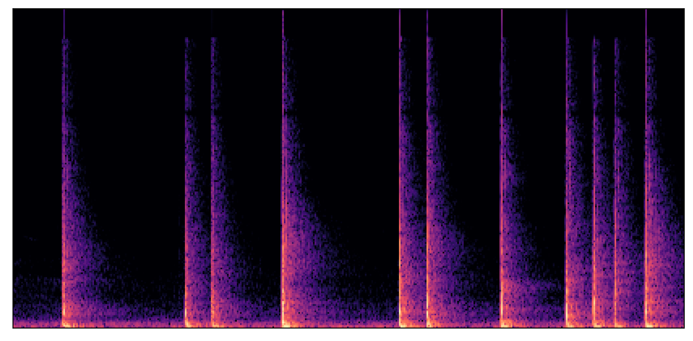 | an acoustic drumkit with kick, snare, hi-hat, and crash cymbal | 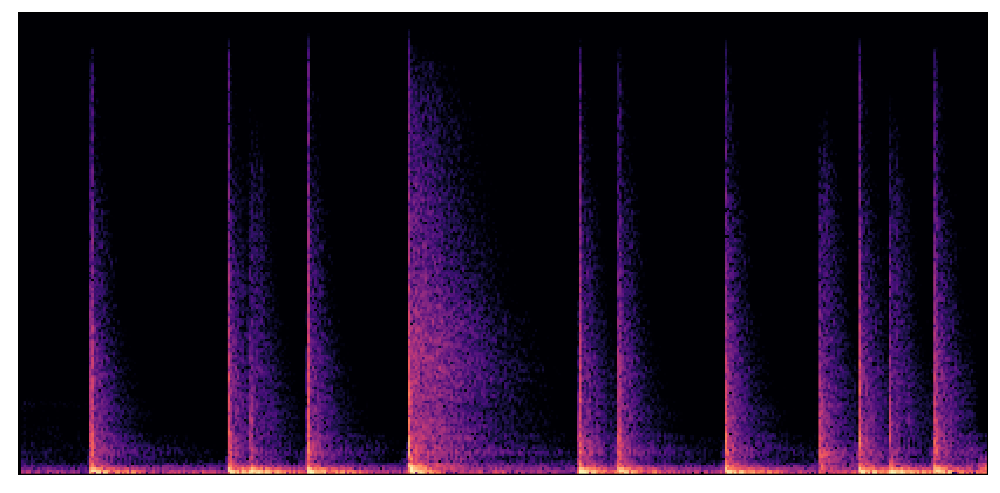 | ||
| 3 | 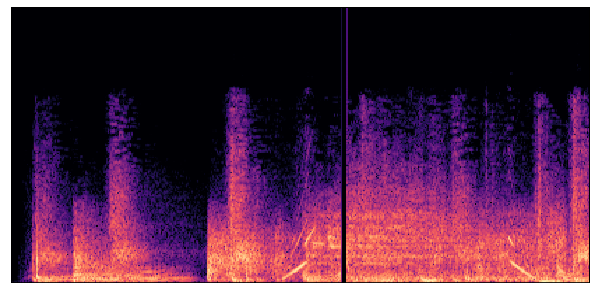 | a deep, muted, underwater electronic drumkit | 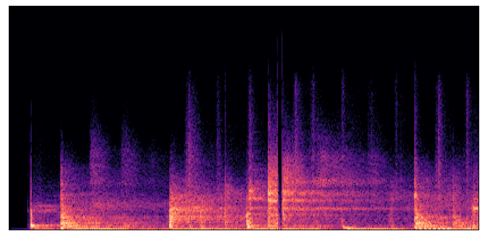 | |||
Below, we provide audio examples for the proposed TRIA and baseline MelodyFlow systems corresponding to Figure 4 in the paper. For TRIA, we use the 2-band adaptive variant detailed in the paper, while for MelodyFlow, we use target timestep 0.2.
We start with a beatboxing rhythm prompt consisting of alternating "kick" and "snare" vocalizations. We then construct three audio timbre prompts for TRIA, each containing the same synthesized kick drum and one additional percussive element: a "bongo," a "wood crack," or a "noise burst." Notably, while TRIA's training data is dominated by traditional drum kit elements such as snare and hi-hat, we choose percussive sounds that are represented sparsely or not at all. For MelodyFlow, we use the aforementioned descriptors ("bongo," "wood crack," "noise burst") as text timbre prompts.
TRIA successfully maps each timbre prompt onto the beatbox rhythm prompt by replacing "kick" vocalizations with a kick drum timbre and replacing "snare" vocalizations with the corresponding percussive element. This indicates that TRIA can distinguish between kick/snare vocalizations and select appropriate sound elements from within the timbre prompt to map onto these vocalizations. By contrast, MelodyFlow adheres much more closely to the spectral structure of the rhythm prompt rather than replacing the input vocalizations with the text-specified percussive elements (i.e. the output recordings still "sound like" beatboxing), indicating timbre leakage. While using a lower target timestep hyperparameter lessens leakage (see "Ablations" below), this results in poor adherence to the rhythm prompt.
Click on the spectrograms below to hear each audio clip.
Below, we provide examples of the proposed TRIA and baseline MelodyFlow systems converting sound gestures to drum recordings. Given a timbre prompt specifying the desired drum sound (an audio recording for TRIA, a text description for MelodyFlow) and a rhythm prompt specifying the desired rhythm, we present the outputs of the proposed and baseline systems. In the corresponding plots, timbre is illustrated by a spectrogram (top) and rhythm is illustrated by dualized rhythm features (bottom). In each row, the rhythm prompt is fixed across all evaluated systems, the audio timbre prompt is fixed across all TRIA variants, and the text timbre prompt is fixed across all MelodyFlow variants. Audio and text timbre prompts are sampled independently and are not meant to correspond.
| Index | Timbre prompt Use this drum sound... |
Rhythm prompt Play this rhythm... |
TRIA (2 bands) | TRIA (2 bands, non-adaptive) | TRIA (1 band) | TRIA (3 bands) | TRIA (4 bands) | Timbre prompt (text) Use this drum sound... |
Rhythm prompt Play this rhythm... |
MelodyFlow (timestep = 0.0) | MelodyFlow (timestep = 0.1) | MelodyFlow (timestep = 0.2) |
|---|---|---|---|---|---|---|---|---|---|---|---|---|
| 1 | 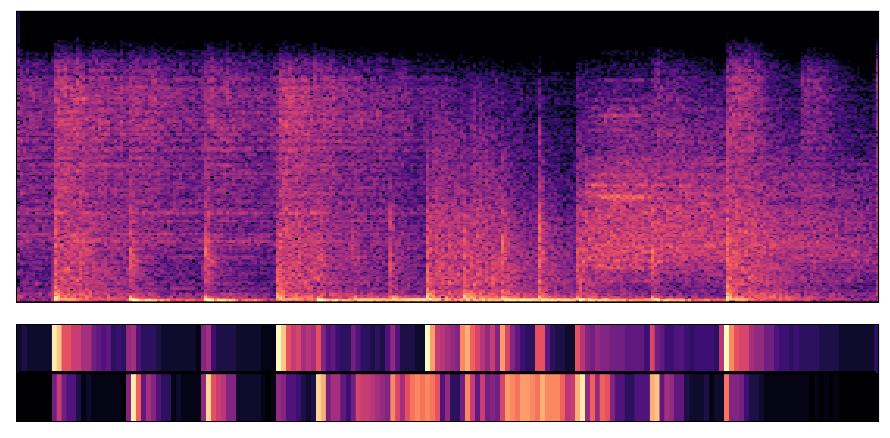 | | | | | | spacious, reverberant acoustic drum set | | | | ||
| 2 | | | | 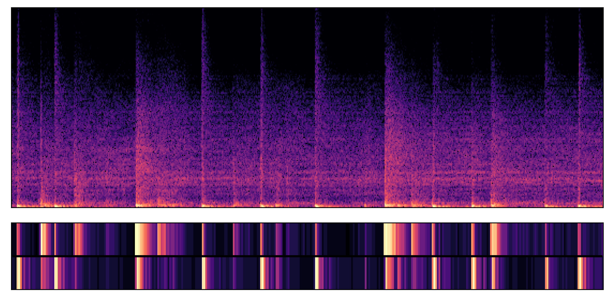 | | balanced, neutral acoustic drum timbre | | | | 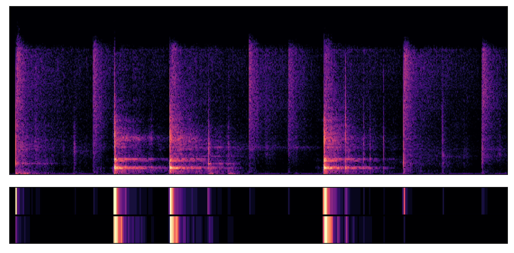 | ||
| 3 | 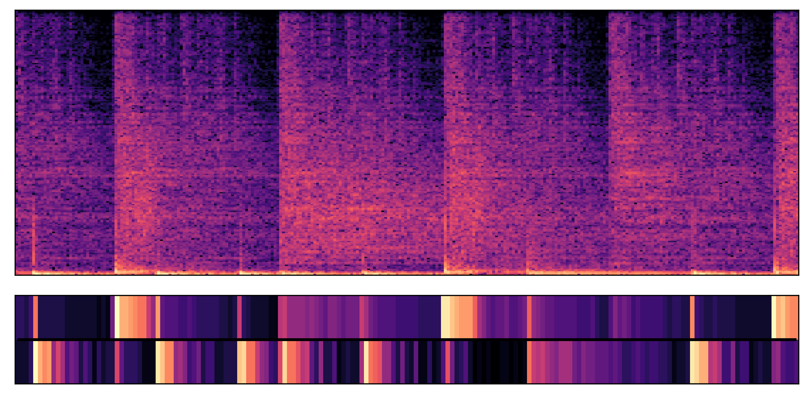 | | | | | | vibrant, digital drum sounds with fast decay | | | | ||
| Index | Timbre prompt Use this drum sound... |
Rhythm prompt Play this rhythm... |
TRIA (2 bands) | TRIA (2 bands, non-adaptive) | TRIA (1 band) | TRIA (3 bands) | TRIA (4 bands) | Timbre prompt (text) Use this drum sound... |
Rhythm prompt Play this rhythm... |
MelodyFlow (timestep = 0.0) | MelodyFlow (timestep = 0.1) | MelodyFlow (timestep = 0.2) |
|---|---|---|---|---|---|---|---|---|---|---|---|---|
| 1 |  |  | 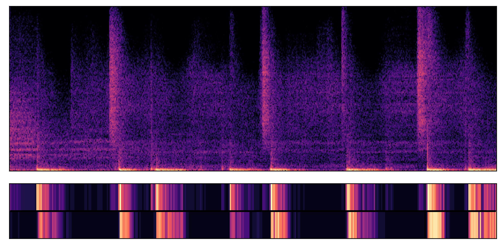 |  |  |  | rounded, organic electronic drums | |  |  |  | |
| 2 | 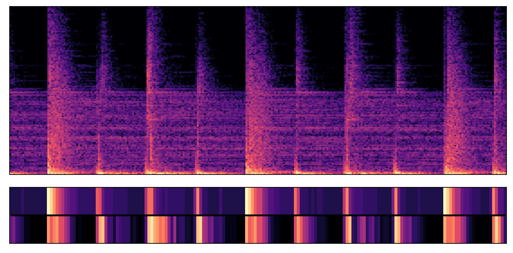 |  |  |  |  |  | subtle, understated acoustic drums | | 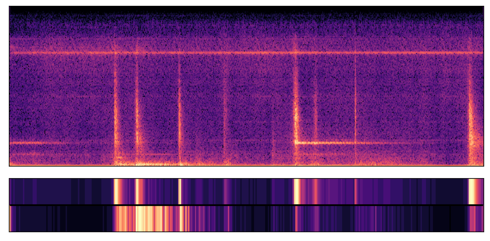 |  |  | |
| 3 |  |  |  |  |  |  |  | dense, compressed electronic drum timbres | |  |  | |
Below, we provide the 50 text timbre prompts used for our objective evaluation, and the 8 text timbre prompts used for our subjective evaluation.
Timbre prompts were generated using GPT-4.5 with the following prompt: "Generate 50 short descriptions of the timbre of a drum kit recording. The drum kit may be acoustic or electric, natural or synthetic. Each description should be formatted as a short sentence or phrase, e.g. "a crisp, bright acoustic drum kit". Try to make each description distinct."
Timbre prompts describing acoustic drum kits were selected from the above set.